United Kingdom
Bentley
W. O. Bentley founded the company in 1919, and his cars won Le Mans five times between 1924 and 1930. Bentley now builds luxury grand tourers in Crewe.
- Founded
- 1919
- Models
- 29
- Generations
- 31
- In production
- 3
- generations
- Photos
- 31
Range
Heritage

Bentley R Type Continental
All models and generations
27 models, each with all its generations.
In production

Past models
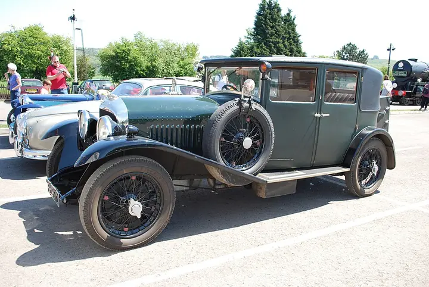
Bentley 4½ Litre- Bentley Mulsanne
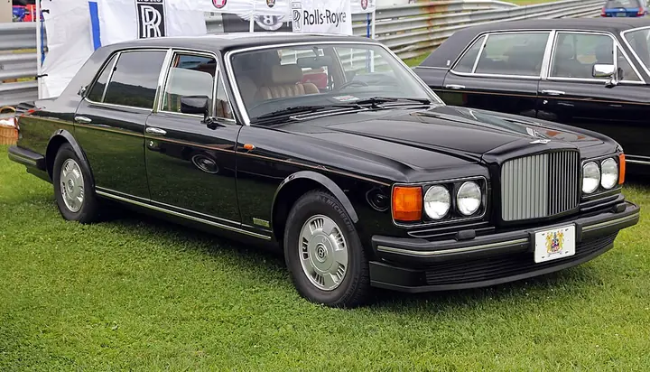
Bentley Brooklands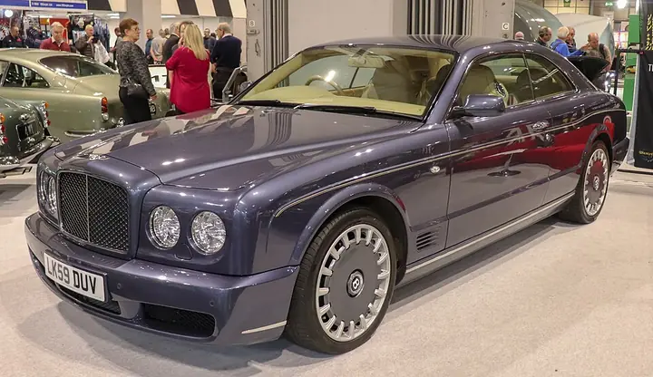
Bentley Brooklands Coupé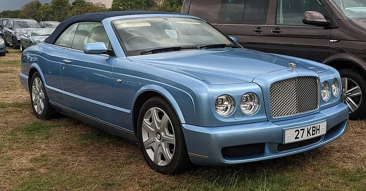
Bentley Azure Bentley Arnage
Bentley Arnage- Bentley Continental R
- Bentley State Limousine
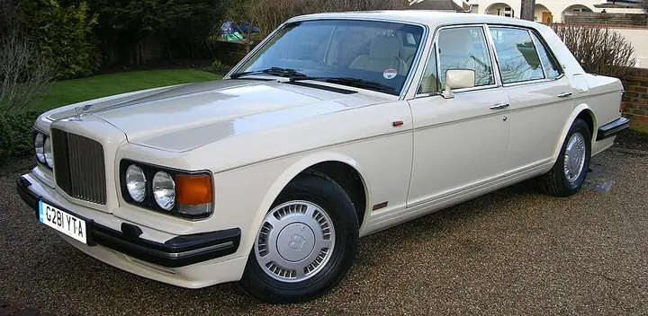
Bentley Turbo R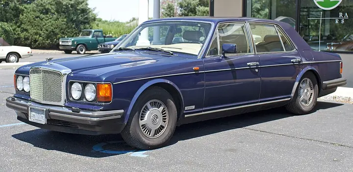
Bentley Eight Bentley T-series
Bentley T-series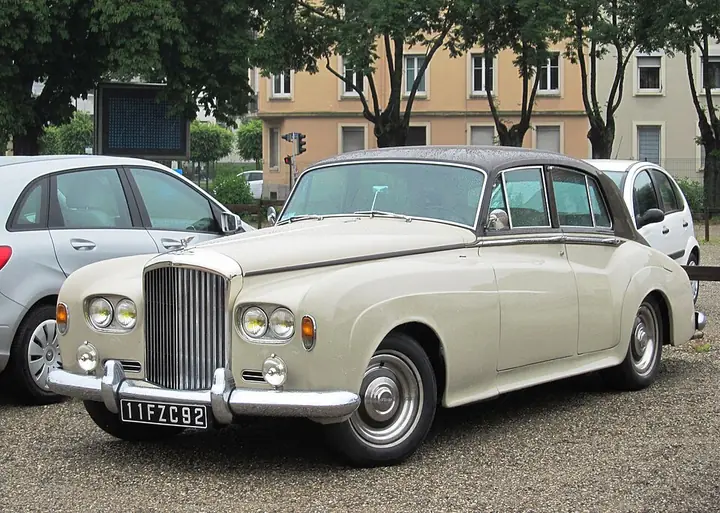
Bentley S3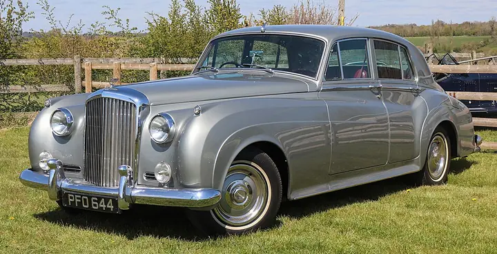
Bentley S2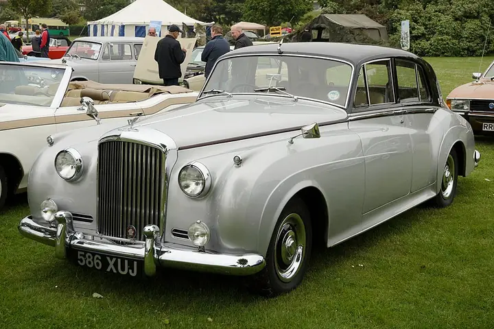
Bentley S1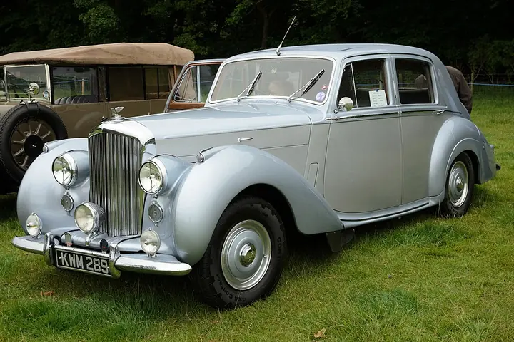
Bentley R Type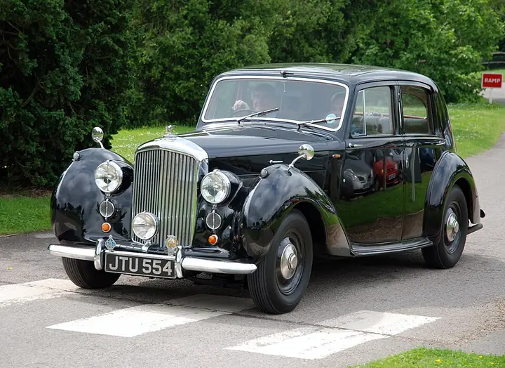
Bentley Mark VI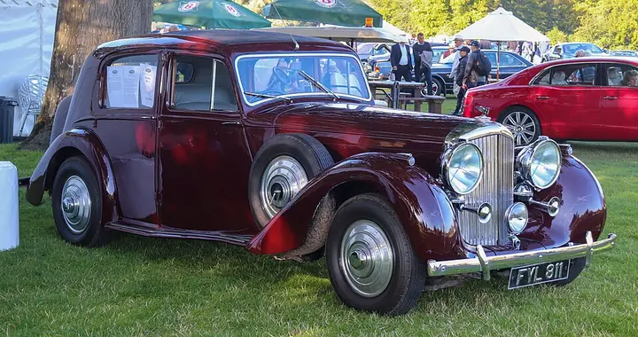
Bentley Mark V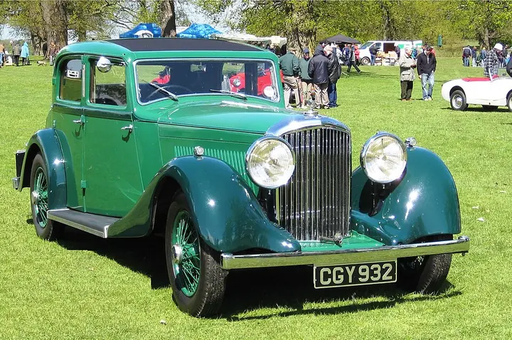
Bentley 3.5 Litre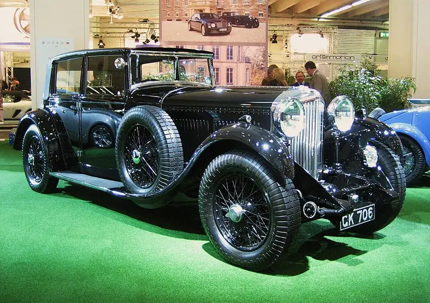
Bentley 8 Litre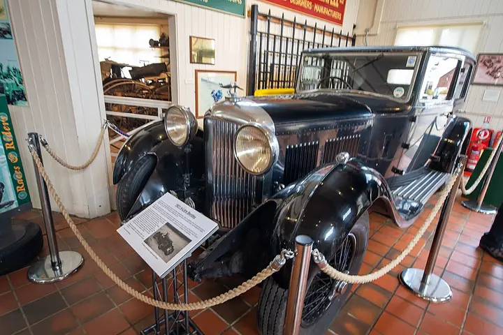
Bentley 4 Litre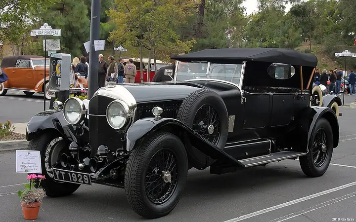
Bentley 6½ Liter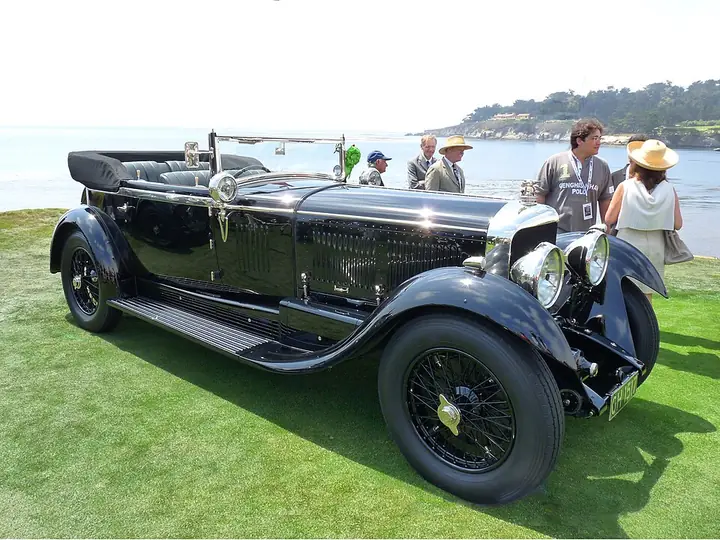
Bentley Speed Six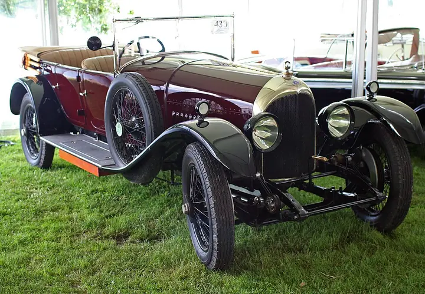
Bentley 3 Litre- Bentley Torcal
Racing cars
2 racing cars: Formula One, endurance, rally and touring.
Source: Wikipedia, CC BY-SA 4.0.


_(cropped)_(cropped).jpg){kind=link}
_1X7A1636.jpg){kind=link}
_IMG_0005.jpg){kind=link}